Vulkan Real-Time Raytracer
C++ & Vulkan Academic Project — DigiPen Institute of Technology — 3 Months
Overview
The purpose of this project was to gain some exposure to vulkan and the newer graphics hardware features of real time raytracing via the Vulkan API. This class provided a framework that was built on top to effectively implement the individual milestones throughout the class. This project gave me an an understanding of ray-tracing (Monte Carlo path tracing), BRDF lighting calculations, and real time denoising filters. It also gave me a grounding in the Vulkan API, as I had to build a Vulkan real time application including both rasterization and raytracing pipelines.
Milestone 1 - Vulkan Bootstrapping
The first milestone was about becoming accustomed to Vulkan's verbose initialization process including instance creation, physical and logical device selection, swapchain setup, render passes, and the graphics pipeline. The output for this milestone was a color-gradient triangle, where each vertex correlates to an RGB value interpolated across the surface. Simple visually, but this milestone contained the building blocks for all milestones that followed.
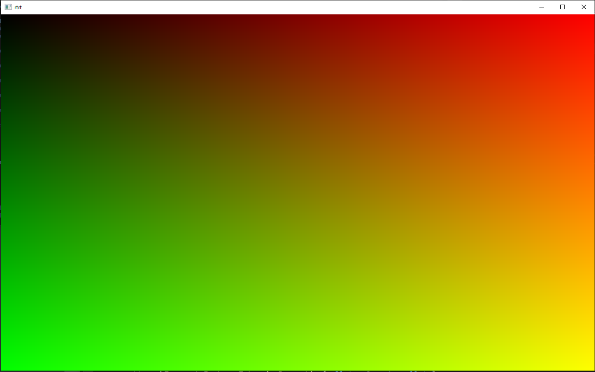
Milestone 2 - Scanline Rasterization
With the pipeline established, this milestone extended the renderer to handle scene geometry using scanline rasterization. Geometry was passed through vertex and index buffers, with a depth buffer to resolve occlusion. This is the traditional real-time rendering approach and is the foundation for ray-based techniques that we compare with in later milestones. Included basic Phong-style shading via GLSL fragment shaders.
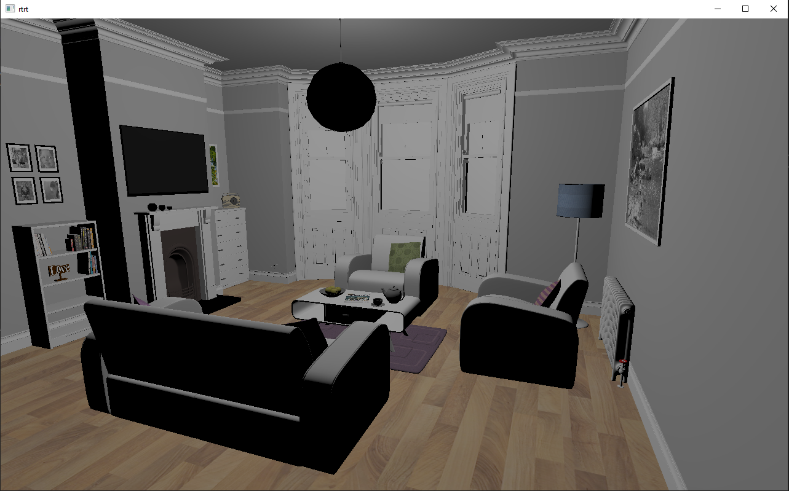
Milestone 3 - Ray Casting
Ray casting is the first step of a full path tracing algorithm. Each pixel generates a single ray, and invokes the ray tracing features to calculate its intersection with the scene. This milestone makes use of the Vulkan Top-Level and Bottom-Level acceleration structures for the ray tracing intersection with the scene. For each ray, I use the same lighting calculation as the scanline algorithm. This produces the exact same picture as the scanline algorithm, but with the scanline technology replaced with ray tracing technology.
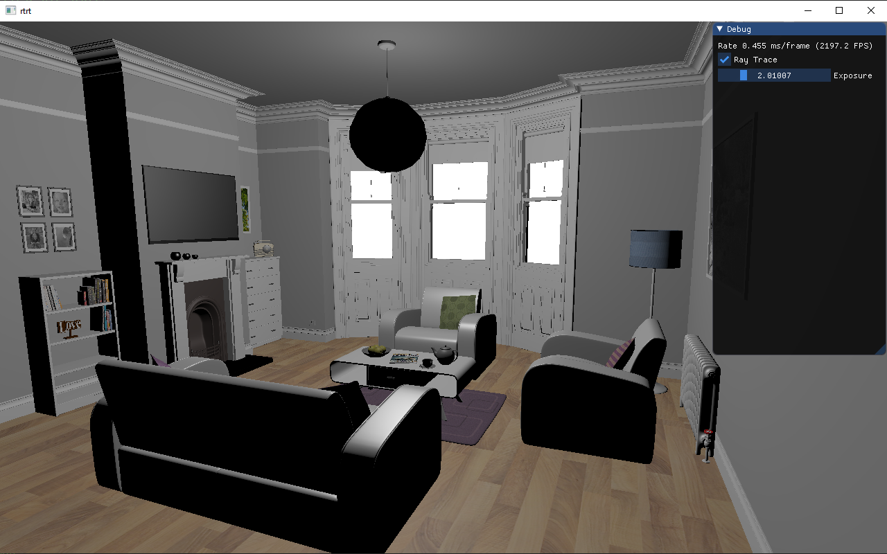
Milestone 4 - Pathtracing
Single-bounce casting became full recursive path tracing. Rays now scatter at surfaces according to a BRDF (diffuse, specular, or mix) and carry radiance back through the scene from light sources. A Monte Carlo estimator averages many samples per pixel to converge on the true light transport integral. The result was physically correct soft shadows, color bleeding, and indirect illumination.
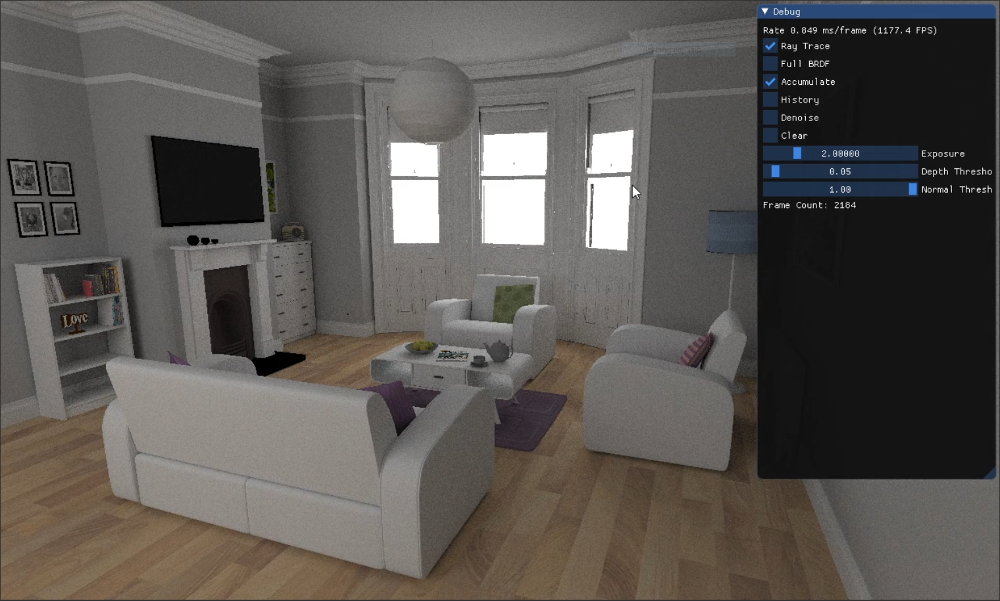
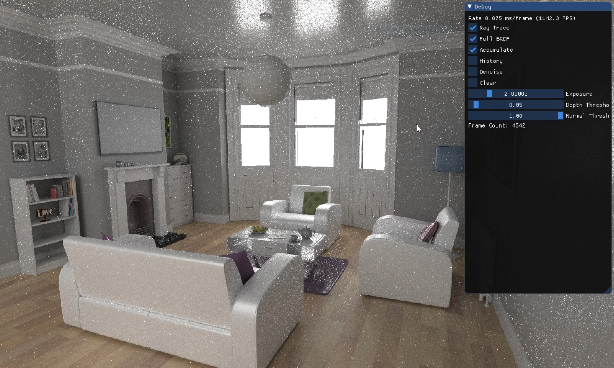
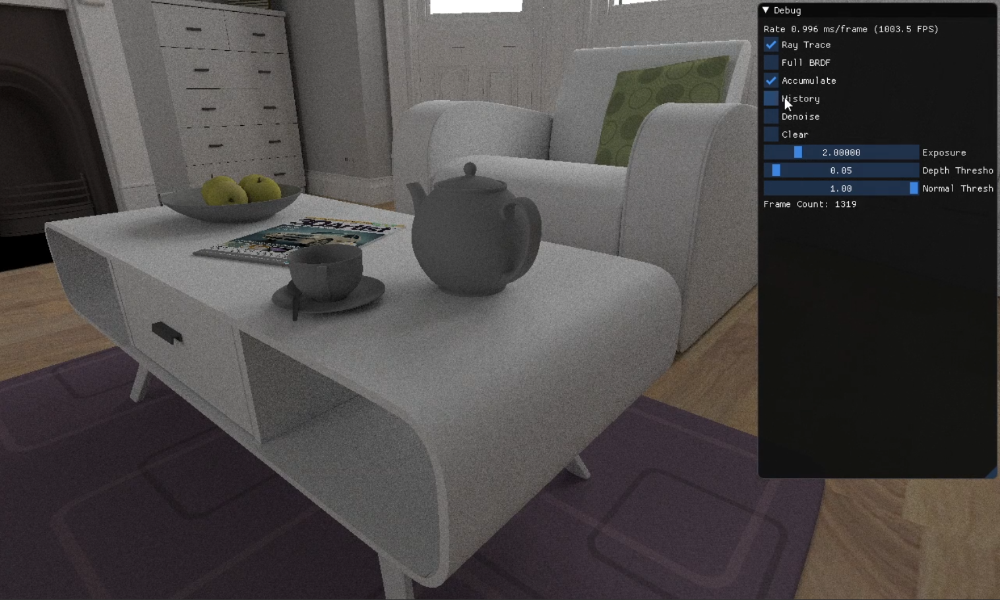
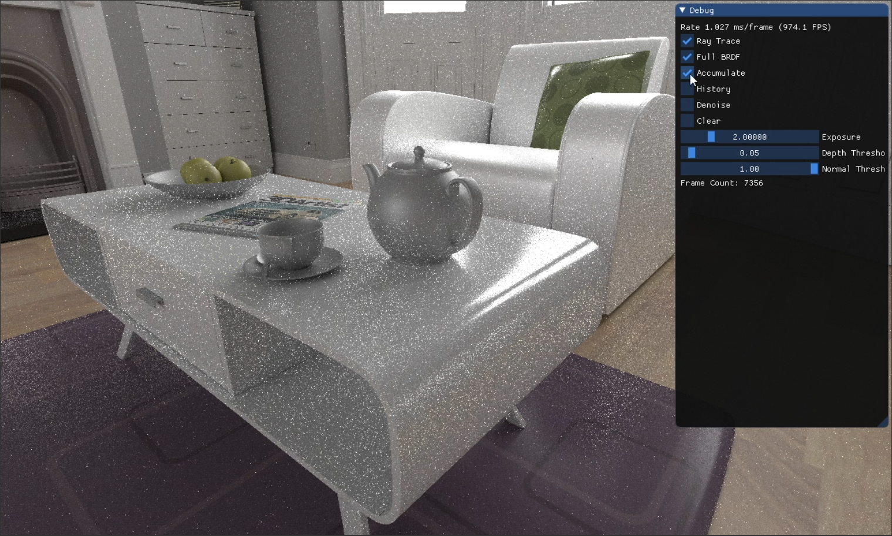
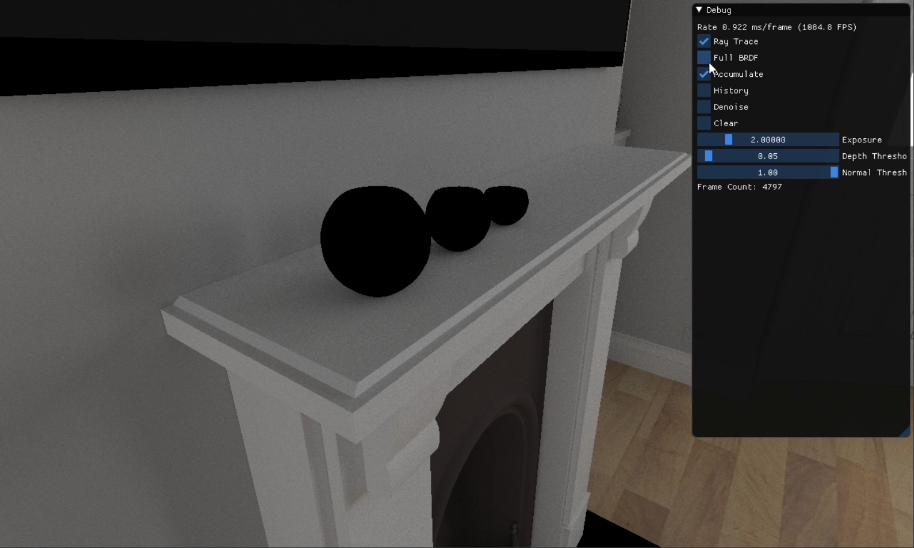
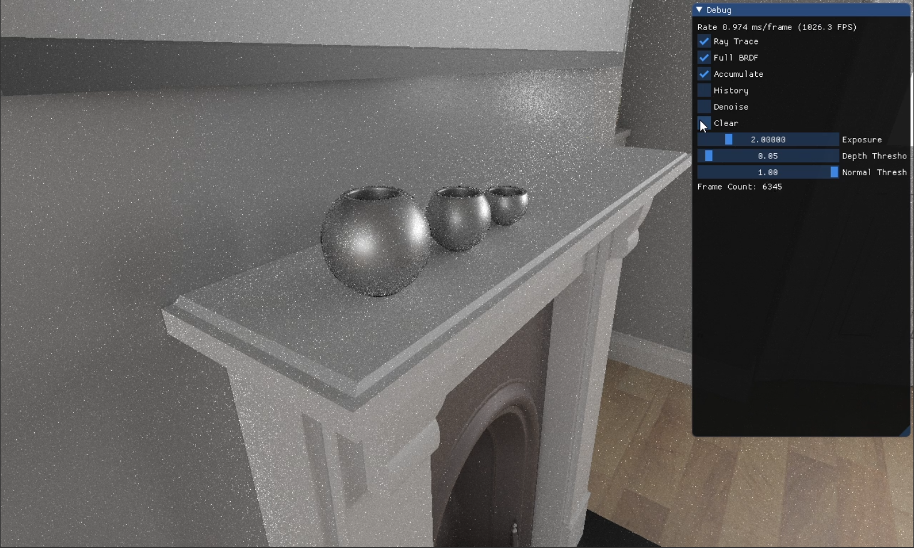
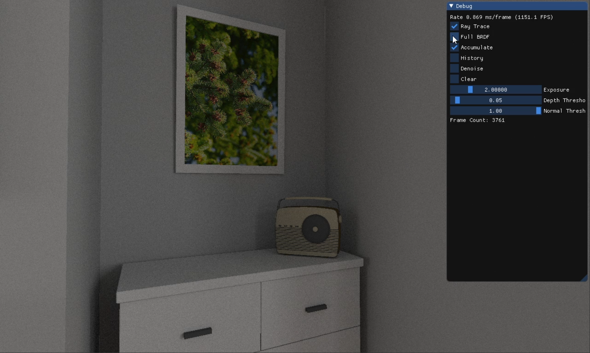
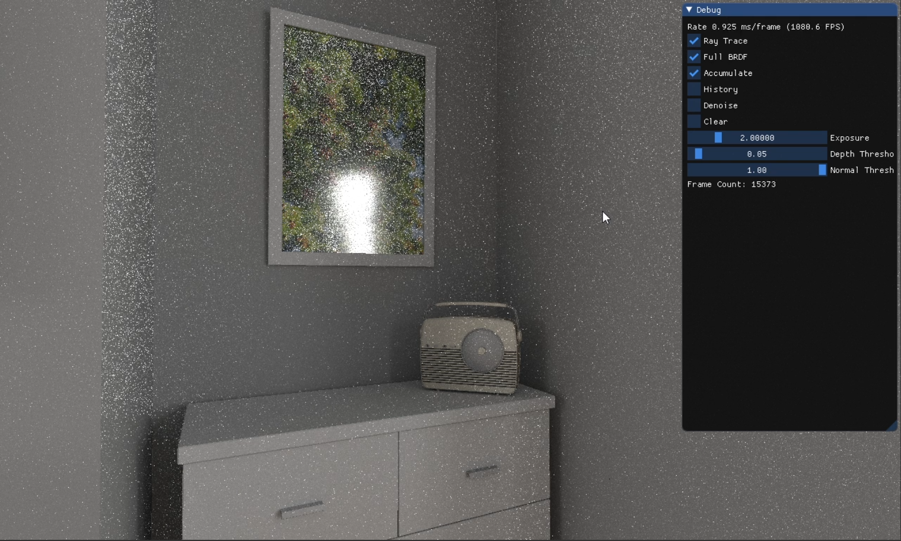
Milestone 5 - History Tracking
The core change was replacing a single line, a simple running average, with one that reaches into the past to retrieve the accumulated value from its reprojected position in the previous frame. Camera movement no longer resets the raytrace; lighting calculations accumulate whenever possible. Each frame's world position is back-projected into the previous frame's space, and the previous accumulation is computed as a weighted average of the 4 pixels in a 2×2 pattern around that back-projected point. For the three failure cases where back-projection cannot find valid pixels to average, the current pixel's accumulation is restarted from scratch. Otherwise, the current frame's radiance value is folded into the running sum.
Milestone 6 - Denoising
Denoising is handled by the À-Trous algorithm, run as 5 successive passes of a compute shader. Each pass takes the current image buffer as input and writes a denoised result to a secondary buffer, which is then copied back to become the input for the next iteration. The step width starts at 1 and doubles each iteration (1, 2, 4, 8, 16) progressively filtering at larger and larger scales. The heart of the algorithm is a 5×5 sampling pattern spread out by the step width, where samples are combined as a weighted average. The weights are heuristic, accounting for differences in color, surface normals, and depth between the center pixel and each sample. This suppresses contributions across edges and discontinuities to preserve geometric detail while smoothing noise in flat regions.